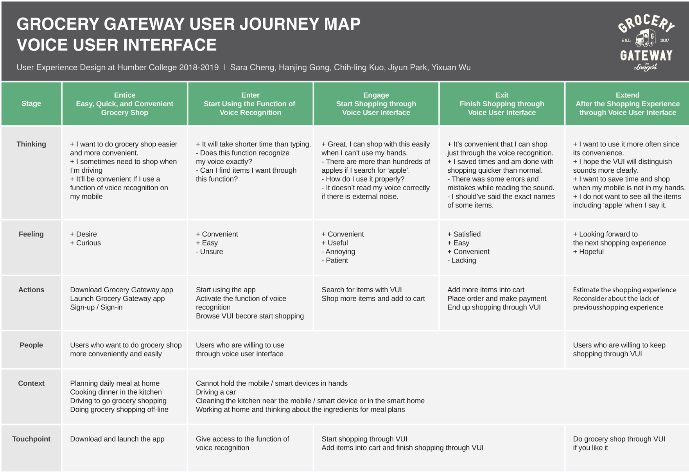
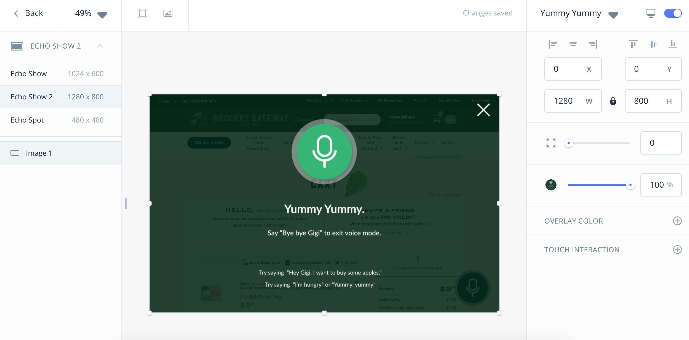

Voice User Interface Design for the Online Grocery Shopping
- TIMELINE
- 5 DAYS
- TOOLS
-
SKETCH
ADOBE XD
INVOCABLE
PHOTOSHOP
ILLUSTRATOR
- MY ROLE
- I contributed to the entire project from the step of planning the 5 Day Sprint Design, I’ve also participated in Ideation, creating Sketches, User Interface Prototype Design, and User Testing
PROJECT BACKGROUND
This is an industry co-op project that students from UXD program at Humber College had cooperated with Grocery Gateway (an online grocery store owned by Longo's, a grocery chain in the Greater Toronto Area). The goal was to utilize voice user interface for Grocery Gateway customers, improving the online grocery shopping experience.What's Design Sprint?
The big idea with the Design Sprint is to build and test a prototype in just five days. You’ll take a small team, clear the schedule for a week, and rapidly progress from problem to tested solution using a proven step-by-step checklist. It’s like fast-forwarding into the future so you can see how customers react before you invest all the time and expense of building a real product.
https://www.thesprintbook.com/how/
—— SPRINT
CHALLENGE
How might we make the online grocery shopping experience
natural and conversation like by using
our voice to communicate our intentions?
 MONDAY - Defining the Problem
MONDAY - Defining the Problem
Q: In what situation do people use voice command?
Q: How can voice command process orders?
Q: Who can benefit?
We then moved on to create a map to illustrate how a customer might move through and navigate the shopping experience on Grocery Gateway using the voice interface.
After we gained a good understanding of our problem, we delved into the “How Might We?” technique.
This technique allowed us to define potential opportunities, challenges and it allowed us to see the big picture, and it reminded us to not jump to the solutions quickly.

 TUESDAY - Finding Ideas & Solutions
TUESDAY - Finding Ideas & Solutions
We started off with lightning demos. We benchmarked other companies such as Google and Amazon, and see how they tackled using voice in their interface. We captured ideas of what people liked from those ideas they used, and determined which ideas might be useful for us to include or possibly enhance our design.
After the lightning demos, we diverged and individually started to sketch out some ideas and solutions that addressed the problem we were trying to solve in this sprint.
 WEDNESDAY - Making Decisions
WEDNESDAY - Making Decisions
At this point, we had to make some decisions and we had a lot of potential ideas from our Crazy 8’s Sketching session.
To get a clear picture, we decided to order our ideas into a prioritization grid to determine what was the most/least important component for the Grocery Gateway voice user interface, and what component was the most/least important to our users.
Essentially, the prioritization grid helped us determine what was the most important component we should focus our attention on when finalizing our design solutions.
After getting a better understanding of what design solutions we should focus on based on our prioritization grid outcome, we reviewed our Crazy 8’s sketches together and picked out the best solution to explore and prototype for the sprint.
We created a persona and a storyboard to illustrate how and in what context a user might interact with Grocery Gateway’s voice interface.
 THURSDAY - Idea Prototyping
THURSDAY - Idea Prototyping
We started off by taking our solution sketches and rapidly wireframed them digitally.
“Yummy Yummy” is our special feature for inspiring users by recommending them some recipes ideas, users have an option to pick Breakfast, Lunch, Dinner, or Baby’s food recipes (the reason of having baby’s food recipes separately is because the ingredients for babies are different from adults)
The Baby’s Food recipe is mainly for families who are constantly busy at home taking care of their children. And where these families find it difficult to prepare meal plans and cook meals because of their busyness, and exhaustion as mealtime rolls around.
Following that, we started to draft out our usability test script where we created scenarios and tasks for our users to complete during the test.
 FRIDAY - Getting User Feedback
FRIDAY - Getting User Feedback
Firstly, we conducted a usability test with 5 participants. Then we analyzed our participants’ feedback and organized them into a feedback grid to get a visual representation of our findings.
RETROSPECTIVE
What worked WELL?
-HMW notes were going well to generate our special
concept‘Yummy Yummy’
-The map was created well to set the structure for us to follow
-We all enjoyed the Crazy 8 sketches. It helped us inspiring a lot
better
-We got lots of good feedback to improve our ideas from our
participants after we conducted the usability testings
What DIDN’T go well?
-Adobe Xd had the very limited functions of prototyping for the
Voice User Interface
-While conducting the usability testings, the VUI featured prototype was not
accurate and responding well
-The original user interface of Grocery Gateway still needs to be
improved
What we might try NEXT?
-Have more recipes for ‘Yummy Yummy’
-Try using a different prototyping tool to create a better voice
prototype
-Not only relying on VUI, show enough text information
Add the filter that can filter the recipes by type. i.e. “vegan”,
“paleo”, or other dietary types.
RETROSPECTIVE DESIGN


Liked something here?
I want to hear from you! Shoot me an email